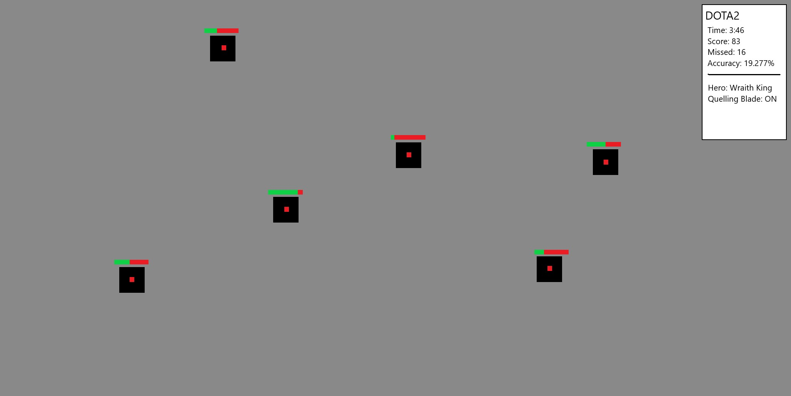

Project Idea:
Overview:
Last hitting is a pivotal idea in MOBA’s that provides the player with gold, in turn advancing their lead in the game. This project will be a lightweight executable designed to help MOBA players to practice last hit training. It will initially perform similar to online programs such as FPS aim trainers like aimtrainer.io the human benchmark variant of aim training. These are two very similar styles of reaction training which should provide a good guide for the simplicity of this projects beginning stages. This new program is designed to be a more physical and concentrated approach to practicing. The program will give the user the option between two games, DOTA2 and League of Legends. It should also have some advanced options for the user which decides the hero and any additional options.
Motivation:
The initial motivation behind the project would be to provide a place for people to practice the concept of last hitting. I was once very passionate about these games and spent almost all of my time learning and practicing. Often times this did not include playing, using other methods such as watching and reading to absorb information. I played a role in DOTA and League that required me to become accurate at last hitting and I always looked for a tool like this that would help me.
Additionally, this project will hopefully push me out of my comfort zone in terms of coding and provide me with the basic skillset to create something. While it will be simple, having something functional and practical is more than a step in the right direction in terms of learning how to create games.
Description:
The main reason for this program is to help players learn in a safer and more accessible environment. In a real game there is a multitude of actions that a player must input and think about whilst also focusing on last hitting, this can be quite chaotic at times. On the other hand, this should give the user the option to exclusively train their mouse control and their hand physically without distractions. Reaction timing and memorising your damage in comparison to health remaining are the most important aspects to this concept, hence these will be the two main characteristics of the game. The target audience for this project is both large and small, this is because out of the niche group looking to utilise it the user can be almost anyone.
The core gameplay will be based on reaction time and damage calculations. The display will have multiple targets with a small health bar displayed above them that will decrease in increments. The goal of the user is to use their mouse to click the target at the correct time. If the current damage is enough to complete the kill, the user will be rewarded. An indicator will be shown if successful, along with a box indicating the amount of achieved last hits.
After initialising the game, the user will be met with a basic user interface asking them to decide on which game they would like to play out of League of Legends and DOTA. While the concept of last hitting is the same in both games, they are significantly different in terms of timing and damage. Therefore, the program should include both. After this there will be a selection of what character they wish to practice with, this is important as every character has a large variety of different attributes. This includes their damage range, attack animation and attack range. Along with it a few tick boxes that ask the player if they would like to use any additive help, mainly in the form of an item called Quelling Blade. This item increases a players damage only against creeps by a flat percentage. Overtime, the idea would be to implement all of these aspects fully. Early builds of the development may simply focus on the timing for melee characters as this should be easier to command and can still help everyone.
While it is not the focus, many more challenging modes could be implemented to further improve learning. These may include but are not limited to; quicker reactions required and not having additional help with items such as quelling blade.
As said previously, the program itself should be very lightweight as it only needs to display a few things. The only real input command a player is performing is clicking their right mouse click on the screen. After this is setup effectively, varying levels of detail can be applied to the game. Background imagery, detailed creeps and other visuals will come second to a working game. But these are a few of the simple things that can be done with relative ease.

Tools and Technologies:
I believe that this program could be made very basic just showing what is necessary in a coding language like python or Java. While someone could take a lengthier and strict approach to creating a game, there is a large selection of software available to assist the programmer. It would be easier to use one of the previously mentioned friendlier programming options such as Unreal engine, Construct3 or Unity along with many more. This would not only to help make it graphically enhanced but also be an easier option for someone with limited programming and coding knowledge currently. Hardware or equipment required would also only include fundamentals like a computer or laptop.
Skills Required:
This project may take a solid understanding of programming and use of the decided software, but it is not an overly advanced idea. The required skills to create such a program in Construct3 or Unity are very feasible. This type of game creation and programming software is readily available all over the internet. Using some online learning resources like reading tutorials or watching YouTube videos could be done in a comfortable timeframe for most as it is always available. This can be done at the desired pace of the individual. It should also not require any special hardware, only a personal computer that is able to run the desired software.
Solid understanding in mathematics is required to assist in most of the calculations. A decent understanding of the games may also help in this regard but are not required.
Outcome:
If successful, the outcome of this project will offer a new atmosphere for people to practice this game concept. It should support the direct mind to muscle connection and help the user with mouse control. Although the project does not automatically solve an issue, it provides the basis for learning and practice. If time and effort are given, it will reward the client. Creating this project will impact me in a way of helping to kickstart my practice coding games and learning software. Despite this, the development is not convoluted, and there are unfortunately no real greater impacts other than achieving the intended goal.